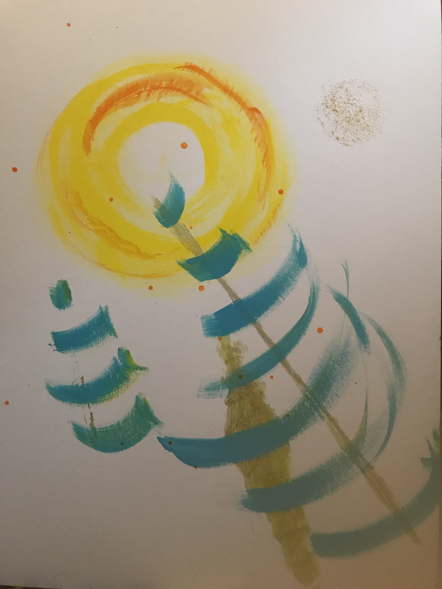

Missions I've launched
Vytality Health. Be a hero in someone's health story.
Love Performs. Love in action.
In pursuit of virtuosity
Hobbies. "Just about about any rigorous training changes how you see the world."
When I was seventeen I applied to Juilliard, after living like a piano conservatory student for two amazing summers in the South.
I didn't end up becoming a classical musician. But hearing fellow musicians in concert, then walking out into the night and feeling the sky move over the earth, the daily things falling away, the rhythm of the universe and the people reaching for it, changed my approach to life.
Live performance
Now I study tabla with the son of a renown master. I'm always ready to see a show, from SFJazzCenter, San Francisco Symphony to Revolution Cafe. And I organize world-class live events like TEDxBushwick.Painting
I am completing a series of 50 paintings. This is painting #1.
She is the light When ego is quiet Of unbearable compassion | She is the sound Of everyone around Of everything that is still | She is the light When ego is quiet Of unbearable compassion | She is she.
Tech
While I have the heart of an artist, my path took me psychology, which I studied at Harvard University and NYU gaining expertise in educational assessments and psychoeducational counseling.
Then I moved on to technology. I lead a digital health startup company, Vytality Health, which is still pre-revenue. The Data Incubator and MEDA's Mission Techies program kickstarted my data science and web development career. MEDA (Mission Economic Development Agency) is a nonprofit in SF who masterfully helps the community, from job searches to business development. An incredible place that feels like home.
What's next: Writing and Travel
My Medium blog, Wordpress blog and YouTube are about entrepreneurship, politics, and life. Vytality Health serves families separated by an ocean, so I travel to learn about them. I love having an excuse to visit some amazing places:- Manila, Philippines
- Auckland, Australia
- Shanghai, China
- Calcutta, India
- Dubai, UAE
- Cairo, Egypt
- Seoul, Korea
- Rejkavic, Iceland
- Geneva, Switzerland
- London, England

I'm hungry
For life and good food! I hate preparing food. As an organizer at Burning Man, I cried in the kitchen while making meals. (I'd eventually get over it.) Make these for me:- Sushi
- Ayurvedic meals of any kind
- Baked potatoes
- Filipino food that's vegetarian
- Salads that taste good
- The Impossible Burger (vegetarian looks like real meat - it even bleeds!)
- Buttercup recipe: Cupcakes
- Buttercup recipe: Vanilla pudding
- Red velvet anything
- Anything my mom makes
BTW, say hi to my family's pug, Sophie Aguhob!